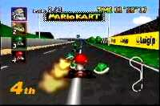

|

Review

Game Type: 3D Racing
Those familiar with the first will find little has changed. Race
go-karts around any of sixteen tracks, picking up weapons and launching
them at opponents to slow them down. Up to four players are allowed
simultaneously with split-screen views. A battle mode is also available
where two to four players must hunt each other down in an arena.
Gameplay: 90/100
The feel of the game is excellent, and with sixteen tracks there's
plenty to see, but the pace is a bit slow in one
player mode even in the highest classes. MK64 shines in the multiplayer
modes, though. Until now 3D racers on the consoles allowed only two
players, and in the Playstation's case many required linking two systems.
But you haven't experienced racing games until you've gotten four people on
the track, jostling each other around. Unfortunately the frame rate drops
a bit when there are four players, and the decrease in resolution from
the split screen can be enough to hamper your view of the track.
Consoles have also been sorely lacking in multiplayer seek-and-destroy
games, with Faceball 2000 and linked Doom probably being the best to date.
But Mario Kart fills that void as well with its excellent battle mode.
Players battle it out in any of four additional special tracks with the
weapons from the racing game, and the last man driving wins. The
decreased resolution from the split screen isn't as much of a problem
here, and this mode seems to keep people entertained longer than GP mode.
Graphics: 70/100
The graphic engine is fantastic, very reminiscient of Super Mario
64's. The framerate is excellent and the game's look is very colorful.
Unfortunately many of the tracks are quite featureless, probably
to accomodate four cameras at once. The visuals are nothing to complain
about, but there are 32-bit games (Wipeout XL comes to mind) that look
better overall.
Sound: 50/100
If you found Mario's voice from SM64 as annoying as I did, you'll
be displeased to know it's back in Mario Kart, and used quite heavily.
Not only that, each of the eight characters now have equally grating
voice samples. It does add a touch of humor to hear Wario laugh
maniacally when he smacks someone with a turtle shell, until it's
repeated for the fourth time within a minute. The music's none too
impressive, either.
Overall: 90/100
I can't recommend this as a one player game if you own a
Playstation, since you no doubt already have Ridge Racer and the
excellent Wipeout. But Mario Kart's main area is as a multiplayer game
anyway. Rent it first to see if you can get your friends hooked, and
if you're successful it's well worth purchase.
|